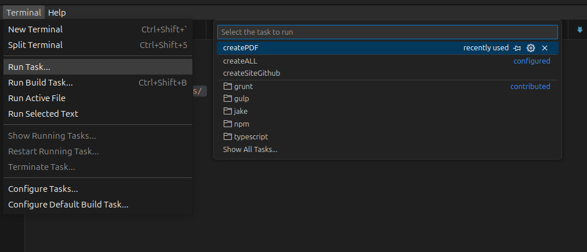
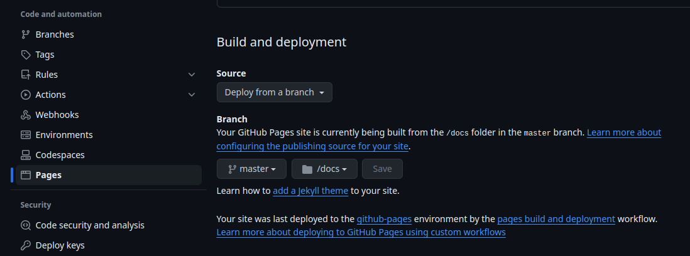

My documentation Sphinx Base
This example documentation has been created in order to help people on this quest. Is a real minimal setup in order to keep it as simple as possible. If you find any problem please make an issue :).
Installation
To use this documentation is necessary to install sphinx and the needed extensions. see: commands/installDependencies/runme.sh and commands/installDependencies/runMeWithRoot.sh
Reboot the machine after the packages installation. If sphinx is not found then install it also via APT.
sudo apt install python3-sphinx
commands/installDependencies/runme.sh
This script installs all the needed dependencies to build the HTML file
pip3 install sphinx sphinx_rtd_theme recommonmark sphinx_markdown_tables nbsphinx
runMeWithRoot.sh
This script installs all the needed dependencies to build the PDF file and should be run with sudo
#!/usr/bin/env bash
apt install latexmk
apt install texlive-latex-extra
Usage
Write your documentation
remember to remove if you want the README.md from “index.rst” and add it to the “exclude_patterns” in “conf.py”
The structure is defined in the index.rst file. the user can edit and add more .MD files and those are then be used to create the documentation in Both PDF and HTML form.
Here is the list of the documents contained now:
Easy Compile with vs Tasks
in the .vscode folder there are 3 tasks configured:
createSiteGithub: creates the HTML files with anyhting needed to serve on github pages
createPDF: creates the PDF
createALL: creates Both
This is how it works from graphical point of view.

Deploy to github
The explaination to tdo this is explained in the link at the end of the file. This documentation makes the following assumptions:
Anything should be simple.
You deploy inside a repo called yourfancydocname.gihub.io
The Guthub page has been set to serve directly the static files from the docs folder as shown in the picture below.
the file .nojekyll is used to stop jeckyll and serve automatically the index.html and all the static files

Low Level Usage
use make html to build the doc as an HTML output in “_build/html”
use make latexpdf to build the doc as a PDF: output in “_build/latex”
use ./commands/createSiteGithub.sh to generate the folder docs with the site ready to deploy to github
use ./commands/createPDF.sh to generate the PDF
use ./commands/createAll.sh to generate Both
the file .nojekyll is required to set github in order to correctly serve the site
LInks
The Integration with gthub explaination has been found here: https://www.docslikecode.com/articles/github-pages-python-sphinx/